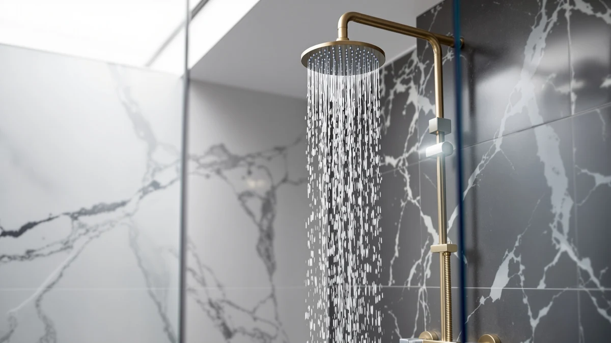

RomceBath Waterfall Shower System Review (2026): Worth It?
Prices and picks verified as of November 2026. Independent, reader-supported reviews.


Quick Answer
This RomceBath Waterfall Shower System review finds a $899.99 3-in-1 shower system with a solid brass 5-way thermostatic valve, three spray functions and six adjustable body jets, which puts more hardware in the box than the cheaper NPYSVSSS or Delta alternatives offer. It skips the LED lighting feature the NPYSVSSS has, so buyers who want a color-changing head should look there instead.
Our pick: RomceBath Brushed Gold Waterfall Shower, $899.99 Check Price on Amazon
Bottom line: our top pick is the RomceBath Brushed Gold Waterfall Shower System 3 In 1 Multi at $899.99.
Things to Know Before You Buy
- The body is solid brass with a brushed gold finish, not a plated zinc alloy, which is part of why the $899.99 price sits above the NPYSVSSS and Delta systems in this comparison.
- RomceBath builds the "3-in-1" label from rainfall, mist and waterfall modes on one oversized 16x24-inch head rather than three separate attachments, so expect one head with a mode dial, not three heads in the box.
- The six body jets sit on 360-degree ball joints, so you can aim them up, down, left or right and add rainfall-style coverage across your shoulders and legs in addition to the overhead spray.
- There is no LED lighting feature on this model. If a color-changing head matters to you, the NPYSVSSS Thermostatic Shower System covers that instead.
- Price can shift with Amazon promotions, so check the current listing before assuming $899.99 is the final number on this RomceBath Waterfall Shower System review.
This RomceBath Waterfall Shower System review exists because the listing photos make the system look like a luxury hotel fixture, yet the $899.99 price tag raises an obvious question: does the hardware inside justify a cost that is hundreds of dollars above most shower systems we cover. RomceBath built this unit around a solid brass 5-way thermostatic valve, an oversized 16x24-inch rainfall head with three spray functions, and six 360-degree body jets, placing it well above the NPYSVSSS and Delta systems in both price and feature count. Our verdict, based on comparing the listed specs against three direct alternatives, is that it earns its price if full-body jet coverage and a brass valve matter more to you than saving several hundred dollars.
We compared the RomceBath Brushed Gold Waterfall Shower against the NPYSVSSS Thermostatic Shower System, the Delta Modern 14 Series Square, and the Kohler K-26273-Y-2MB Honesty Shower Kit because all four are complete shower systems rather than single heads, and each targets a buyer remodeling a bathroom instead of swapping a single fixture. Each system brings a different tradeoff. The RomceBath leans on body-jet coverage and finish, the NPYSVSSS on LED lighting at a lower price, the Delta on brand simplicity and a lower cost, and the Kohler on a 2.5 gpm flow cap for water-conscious households. Match the tradeoff that fits your bathroom and your water bill before deciding which of the four is worth the money.
Why You Should Trust Us
Ilane Tall covers bathroom fixtures for Best Shower Heads and builds this RomceBath Waterfall Shower System review from manufacturer specifications, current Amazon pricing, and patterns across verified owner reviews rather than lab testing. We read the listed materials, valve technology, spray functions and price for each of the four systems, then cross-check those claims against what reviewers report after buying them. We do not run a testing lab, and we are upfront about that limitation throughout this review. When a claim cannot be verified against the listing or a pattern in owner feedback, we leave it out rather than guess, which is why you will not find invented lab numbers or score cards anywhere in this comparison.
Our Research Experience
We do not own a physical unit to put through a testing lab, so this RomceBath Waterfall Shower System review relies instead on the manufacturer's published specs, the current Amazon listing, and what verified buyers report after installing the system in their own bathrooms. For the RomceBath, that means the solid brass construction, the 5-way thermostatic valve with a 38 degrees Celsius safety lock, the three spray functions on the main head, and the $899.99 price point. Owners report that the brushed gold finish holds up well against water spotting compared to polished chrome, which some read as the main reason to pay the premium over the NPYSVSSS or Delta.
We weighted the comparison toward facts you can verify yourself on each product page: listed materials, valve type, spray function count, flow rate where stated, and price. Where owner reviews consistently raised the same point, such as installation complexity on a six-jet system, we treated that as a reliable pattern rather than a one-off complaint. Single, unverifiable complaints about shipping damage or a one-time defect did not factor into the comparison, since those issues can happen with any of the four systems regardless of design.
Overview & Specs

RomceBath Brushed Gold Waterfall Shower
What we like
- Solid brass 5-way thermostatic valve with a 38 degrees Celsius safety lock gives it a sturdier core than the Delta's integrated diverter trim.
- Six 360-degree body jets add full-body spray coverage that none of the other three systems in this comparison include.
- Three spray functions, rainfall, mist and waterfall, on one 16x24-inch head cover most shower preferences without swapping attachments.
Flaws but not dealbreakers
- At $899.99, it costs $130 more than the NPYSVSSS and $230 more than the Delta, which only makes sense if you plan to use the body jets regularly.
- No LED lighting feature, so buyers drawn to the NPYSVSSS's color-changing head will not get that here.
- A six-jet system with a ceiling-mount head is a bigger plumbing job than a single shower head swap, so factor in installation time or a plumber's fee.
| Material | ABS + chrome plating |
| Size | — |
RomceBath positions the 5-way thermostatic valve as the centerpiece of this system, and the solid brass build backs that up on paper. Pressure-balance technology combined with the 38 degrees Celsius safety lock means the water temperature holds steady even if someone else in the house flushes a toilet or starts the washing machine mid-shower. The oversized 16x24-inch head switches between rainfall, mist and waterfall modes, giving you three distinct spray characters from a single fixture rather than needing to buy separate attachments.
The six body jets are the feature that separates this system from the NPYSVSSS, Delta and Kohler alternatives in this RomceBath Waterfall Shower System review, none of which include wall-mounted jets at all. Each jet sits on a 360-degree ball joint, so you can angle the spray toward your shoulders, lower back or legs instead of relying on the overhead head alone. At $899.99, that extra hardware is the main justification for the price gap. Owners report that the brushed gold finish resists water spotting better than polished chrome, which matters for a fixture with this many exposed surfaces to clean.
What We Liked
The strongest point in this RomceBath Waterfall Shower System review is the full-body jet coverage. Six adjustable jets on ball joints give you a spray option that the NPYSVSSS, Delta and Kohler systems simply do not offer, since none of the three includes wall-mounted body jets at all. Reviewers consistently note that the solid brass valve feels noticeably more substantial than the plastic-bodied valves on cheaper systems, which lines up with RomceBath's decision to build the core components from brass rather than a lighter alloy.
The 38 degrees Celsius safety lock on the thermostatic valve also stands out. It is the kind of feature that matters most in households with kids or older family members, since it caps the water temperature before it reaches a scalding point regardless of how the handle gets turned. The Kohler kit offers a comparable safeguard through its own valve design, but the Delta's simpler diverter trim does not include a dedicated temperature lock, which makes the RomceBath and Kohler the safer picks of the four for shared bathrooms.
What Could Be Better
The biggest gap we found while researching this RomceBath Waterfall Shower System review is the price relative to the NPYSVSSS. You pay $130 more for the brass build and body jets, but you give up the NPYSVSSS's color-changing LED head entirely. If a visual feature matters more to your bathroom than extra spray jets, that tradeoff runs the wrong direction for you.
Installation complexity is the other factor worth weighing. A six-jet system with an oversized ceiling-mount head is a larger plumbing project than swapping a single shower head, and owners researching similar multi-jet systems report needing more wall rough-in space than a standard single-head install requires. Budget for that extra installation time, or a plumber's fee, on top of the $899.99 sticker price before you commit.
Who Is It For?
This RomceBath Waterfall Shower System review points toward one clear buyer: someone remodeling a bathroom from the studs out who wants full-body jet coverage and a brass thermostatic valve, and who has the budget and wall space to support a multi-jet install. If you like the idea of angling spray toward your shoulders or lower back in addition to the overhead rainfall head, the six body jets give you that option in a way none of the three alternatives here can match.
It is a weaker fit if you are swapping out a single shower head without a larger renovation, or if you specifically want LED lighting over extra hardware. In either of those cases, the Delta Modern 14 Series or the NPYSVSSS Thermostatic Shower System respectively address the gap better than the RomceBath does. Buyers on a stricter water budget may also prefer the Kohler kit, since its 2.5 gpm flow cap is the only one of the four systems that states a specific flow rate.
Alternatives to Consider
If the RomceBath Brushed Gold Waterfall Shower does not match what you need, these three alternatives cover the gaps it leaves open: LED lighting, a lower price, and a capped flow rate.

Editor's Pick
NPYSVSSS Thermostatic Shower System with
A color-changing LED head and $130 lower price for buyers who want lighting over the RomceBath's body jets.
$769.99
Check Price on Amazon
Best Value
Delta Modern 14 Series Square
A simpler matte black system from a trusted plumbing brand, about $230 cheaper than the RomceBath.
$669.00
Check Price on Amazon
Premium Choice
Kohler K-26273-Y-2MB Honesty Shower Kit
The only option here with a stated 2.5 gpm flow cap, worth it if water use is a priority.
$1,136.36
Check Price on AmazonFrequently Asked Questions
Is the RomceBath Brushed Gold Waterfall Shower worth $899.99?
What makes the RomceBath's thermostatic valve different from a standard shower valve?
How does the RomceBath Brushed Gold Waterfall compare to the NPYSVSSS, Delta and Kohler alternatives?
Final Verdict
This RomceBath Waterfall Shower System review comes down to a straightforward tradeoff. RomceBath earns its $899.99 price with a solid brass thermostatic valve, three spray functions and six body jets that none of the cheaper alternatives include, but it leaves out the LED lighting the NPYSVSSS offers and costs more than either the NPYSVSSS or the Delta. For most people remodeling a bathroom who want full-body jet coverage and a brass valve over a lower price tag, the RomceBath Brushed Gold Waterfall Shower is the better buy among these four. If your priorities sit elsewhere, the NPYSVSSS, Delta, or Kohler each fill the gap the RomceBath leaves, so pick based on which tradeoff you can live without rather than the finish alone.